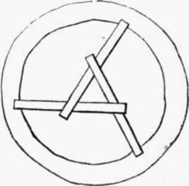

The Goban Saor
Description
This section is from the book "Legendary Fictions Of The Irish Celts", by Patrick Kennedy. Also available from Amazon: Legendary Fictions of the Irish Celts.
The Goban Saor
It is a long time since the Goban Saor was alive. Maybe it was him that built the Castle of Ferns; part of the walls are thick enough to be built by any goban, or gow, that ever splintered wood, or hammered red-hot iron, or cut a stone. If he didn't build Ferns, he built other castles for some of the five kings or the great chiefs. He could fashion a spear-shaft while you'd count five, and the spear-head at three strokes of a hammer. When he wanted to drive big nails into beams that were ever so high from the ground, he would pitch them into their place, and, taking a fling of the hammer at their heads, they would be drove in as firm as the knocker of Newgate, and he would catch the hammer when it was falling down.
At last it came to the King of Munster's turn to get his castle built, and to Goban he sent. Goban knew that, in other times far back, the King of Ireland killed the celebrated architects, Rog, Robog, Rodin, and Rooney, the way they would never build another palace equal to his, and so he mentioned something to his wife privately before he set out. He took his son along with him, and the first night they got lodging at a farmer's house. The farmer told them they might leave their beasts to graze all night in any of his fields they pleased. So they entered one field, and says Goban, " Tie the bastes up for the night." " Why ?" says the son ; "I can't find anything strong enough." " Well, then, let us try the next field. Now," says he, " tie up the horses if you can." "Oh ! by my word, here's a thistle strong enough this time." " That will do."
The next night they slept at another farmer's house, where there were two young daughters-one with black hair, very industrious ; the other with fair complexion, and rather liking to sit with her hands across, and listen to the talk round the fire, than to be doing any work. While they were chatting about one thing and another, says the Goban, " Young girls, if I'd wish to be young again, it would be for the sake of getting one of you for a wife ; but I think very few old people that do be thinking at all of the other world, ever wish to live their lives over again. Still I wish that you may have good luck in your choice of a husband, and so I give you three bits of advice. Always have the head of an old woman by the hob; warm yourselves with your work in the morning ; and, some time before I come back, take the skin of a newly-killed sheep to the market, and bring itself and the price of it home again." When they were leaving next morning, the Goban said to his son, " Maybe one of these girls may be your wife some day."
As they were going along, they met a poor man striving to put a flat roof over a mud-walled round cabin, but he had only three joists, and each of them was only three-quarters of the breadth across. Well, the Goban put two nicks near one end of every joist on opposite sides; and when these were fitted into one another, there was a three-cornered figure formed in the middle, and the other ends rested on the mud wall, and the floor they made was as strong as anything. The poor man blessed the two men, and they went on. That night they stopped at a house where the master sat by the fire, and hardly opened his mouth all the evening. If he didn't talk, a meddlesome neighbour did, and interfered about everything. There was another chance lodger besides the Goban and his son, and when the evening was half over, the Goban said he thought he would go farther on his journey as it was a fine night. "You may come along with us, if you like," says he to the other man ; but he said he was too tired. The two men slept in a farmer's house half a mile farther on ; and the next morning the first news they heard, when they were setting out, was, that the man of the house they left the evening before was found murdered in his bed, and the lodger taken up on suspicion. Says he to his son, " Never sleep a night where the woman is everything, and the man nothing." He stopped a day or two, however, and by cross-examining and calling witnesses, he got the murder tracked to the woman and the busy neighbour.
The next day they came to a ford, where a dozen of carpenters were puzzling their heads about setting up a wooden bridge that would neither have a peg nor a nail in any part of it. The king would give a great reward to them if they succeeded, and if they didn't, he'd never give one of them a job again. "Give us a hatchet and a few sticks," says the Goban, " and we'll see if we have any little genius that way." So he squared a few posts and cross-bars, and made a little bridge on the sod ; and it was so made, that the greater weight was on it, and the stronger the stream of water, the solider it would be.1
Maybe the carpenters warri't thankful, except one envious, little, ould basthard of a fellow, that said any child might have thought of the plan (it happened he didn't think of it though), and would make the Goban and his son drink a cag of whisky, only they couldn't delay their journey.
1 If a curious reader wishes to know the secret of the roofing of the round cabin, let him get three twigs, cut a notch within half an inch of one end of each, and another about an inch and a half from that, but on the opposite side. Let him get a hat, or a large mug, or anything else he pleases, and by adapting the notched ends to each other, he will find the plan of making a roof-support to his model cabin after some essays, more or less, and some healthy trials of his patience. The editor of these sketches will not attempt to decide whether the Goban or Julius Caesar was the inventor of the peg-less and nail-less bridge, but the mode of construction may be learned from the Commentaries on the Gallic War.
At last they came to where the King of Munster kep' his coort, either at Cashel or Limerick, or some place in Clare, and the Goban burned very little daylight till he had a palace springing up like a nagger. People came from all parts, and were in admiration of the fine work ; but as they were getting near the eaves, one of the carpenters that were engaged at the wooden bridge came late one night into the Goban's room, and told him what himself was suspecting, that just as he would be setting the coping stone, the scaffolding would, somehow or other, get loose, himself fall down a few stories and be kilt, the king wring his hands, and shed a few crocodile tears, and the like palace never be seen within the four seas of Ireland.
" Sha gu dheine? 1 says the Goban to himself; but next day he spoke out plain enough to the king. " Please your Majesty," says he, " I am now pretty near the end of my work, but there is still something to be done before we come to the wall-plate that is to make all sure and strong. There is a bit of a charm about it, but I haven't the tool here-it is at home, and my son got so sick last night, and is lying so bad, he is not able to go for it. If you can't spare the young prince, I must go myself, for my wife wouldn't intrust it to any one but of royal blood." The king, rather than let the Goban out of his sight, sent the young prince for the tool. The Goban told him some outlandish name in Irish, which his wife would find at his bed's head, and bid him make all the haste he could back.
In a week's time, back came two of the poor attendants that were with the prince, and told the king that his son was well off, with the best of eating and drinking, and chess-playing and sword exercise, that any prince could wish for, but that out of her sight the Goban's wife nor her people would let him, till she had her husband safe and sound inside of his own threshold.
Well, to be sure, how the king fumed and raged ! but what's the use of striving to tear down a stone wall with your teeth ? He could do without his palace being finished, but he couldn't do without his son and heir.
1 "That's it," or "Is that it?"
The Goban didn't keep spite ; he put the finishing touch to the palace in three days, and, in two days more, himself and his son were sitting at the farmer's fireside where the two purty young girls wor.
" Well, my colleen bawn," says he to the one with the fair hair, " did you mind the advice I gev you when I was here last?" " Indeed I did, and little good it did me. I got an old woman's skull from the churchyard, and fixed it in the wall near the hob, and it so frightened every one, that I was obliged to have it taken back in an hour." " And how did you warm yourself with your work in the cold mornings ? " " The first morning's work I had was to card flax, and I thrune some of it on the fire, and my mother gave me such a raking for it, that I didn't offer to warm myself that way again." " Now for the sheep-skin." " That was the worst of all. When I told the buyers in the market that I was to bring back the skin and the price of it, they only jeered at me. One young buckeen said, if I'd go into the tavern and take share of a quart of mulled beer with him, he'd make that bargain with me, and that so vexed me that I turned home at once." " Well, that was the right thing to do, anyhow. Now my little Ceann Dhu (black head), let us see how you fared. The skull ? " " Och ! " says an old woman, sitting close to the fire in the far corner, " I'm a distant relation that was left desolate, and this," says she tapping the side of her poor head, " is the old woman's skull she provided." " Well, now for the warming of yourself in the cold mornings." "Oh, I kept my hands and feet going so lively at my work that it was warming enough." "Well, and the sheep-skin?" "That was easy enough. When I got to the market, I went to the crane, plucked the wool off, sold it, and brought home the skin."
" Man and woman of the house," says the Goban, " I ask you before this company, to give me this girl for my daughter-in-law ; and if ever her husband looks crooked at her, I'll beat him within an inch of his life." There was very few words, and no need of a black man to make up the match ; and when the prince was returning home, he stopped a day to be at the wedding. If I hear of any more of the Goban's great doings, I'll tell 'em some other time.
Intermixed with tales of the wild and wonderful, we sometimes meet in the old Gaelic collections with a few of a more commonplace character, illustrative of the advantage of observing certain moral maxims or time-honoured proverbs. The MS. from which we have obtained the following story does not explain what the colour of the soles of the dying king had to do in the narrative.
Continue to:
- prev: The Brown Bear Of Norway. Part 3
- Table of Contents
- next: The Three Advices Which The King With The Red Soles Gave To His Son
Tags
fiction, Irish, Celtic myths, sacred text, St. Patrick, stories